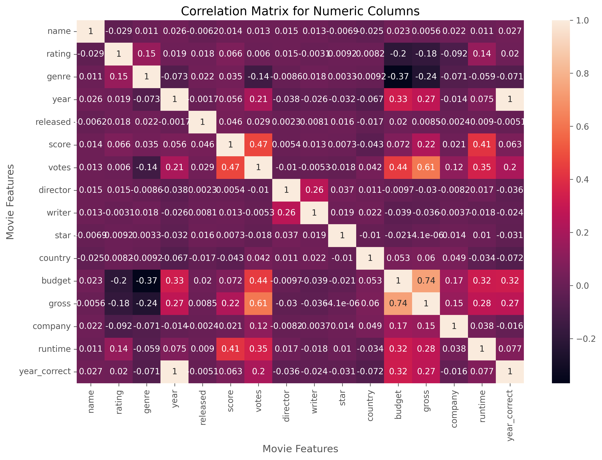

Movie Correlation with Python
Python
The Data
The dataset for this project includes information on thousands of movies which range in popularity, budget, genre, etc. This was a very interesting dataset to work with and I was able to draw some interesting conclusions with it. I included a download link to the data below.
Link to dataAnalyzing the Data
This project allowed me to practice my abilities with numerous python libraries including pandas, seaborn, and matplotlib. As always, I use comments to organize my code so that I can easily explain my process to others (or my future self). Below, I have provided some insights to my appraoch with this dataset.
Key Components:- Cleaning the data (removing duplicates, handling missing data, etc).
- Finding correlations and visualizing with scatter plots.
- Creating a correlation matrix.